Next: 4 Configuration 2: Pitch-Yaw-Pitch Up: multicube-clawar Previous: 2 Construction of the


Next: 4
Configuration 2: Pitch-Yaw-Pitch Up: multicube-clawar
Previous: 2
Construction of the
|
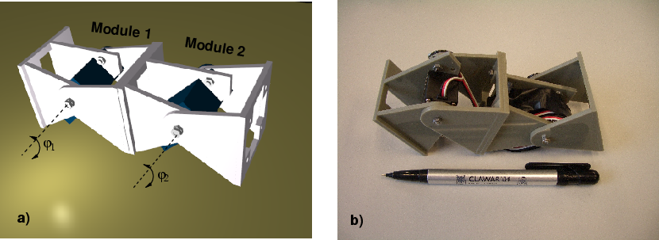 |
Figure: Pitch-Pitch (PP) configuration, composed of two Y1 modules connected in the same orientation.
This configuration is constructed attaching two Y1
modules as shown in Figure .
Experiments show that this configuration can move on a straight line,
backward and forward. Also, the velocity can be controlled.
Therefore, this is the minimal possible configuration for locomotion,
using this modules.
.
Experiments show that this configuration can move on a straight line,
backward and forward. Also, the velocity can be controlled.
Therefore, this is the minimal possible configuration for locomotion,
using this modules.
|
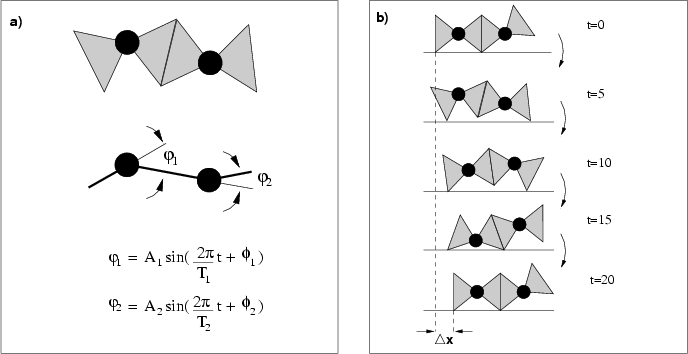 |
Figure:
a) PP configuration parameters and control. b)
Locomotion of the PP configuration when
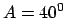 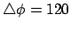 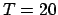
Figure a
shows the robot parameters.
a
shows the robot parameters.
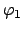
and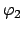
are the rotation angles of the modules 1 and 2 respectively. The locomotion is achieved by applying a sinusoidal function to the rotation angles:
|
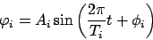 |
(1) |
where
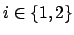
. The values of the parameters: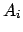
,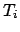
and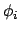
determines the properties of the movement.In order to simplify the experiments, the following restrictions have been applied:
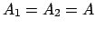
,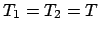
, therefore, and are the same sinusoidal function with a different phase (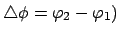
. The period has been fixed to 20 unit of time.
|
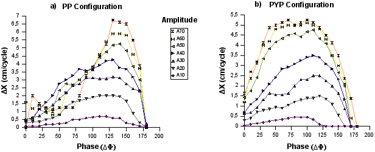 |
Figure:
The distance per cycle roved (
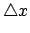 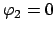
The motion is cyclical, with a period of
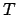
. After unit of time, the movement is repeated. The space per cycle roved by the robot is . Figure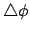
) and amplitude (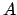
) of the waves applied. As can be seen, increases with the increment of amplitude. Therefore, the speed of the locomotion can be controlled by the amplitude of the wave.The difference in phase determines the coordination between the two articulations. If the modules rotates in phase(
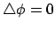
), no locomotion is achieved. The same happens when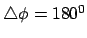
. The best coordination is obtained when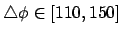
. For negative values (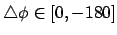
), the locomotion is done in the opposite way.Figure b
shows the position of the articulations at five instants, when
,
and
.
b
shows the position of the articulations at five instants, when
,
and
.


Next: 4
Configuration 2: Pitch-Yaw-Pitch Up: multicube-clawar
Previous: 2
Construction of the